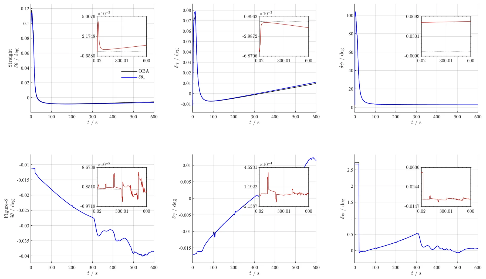
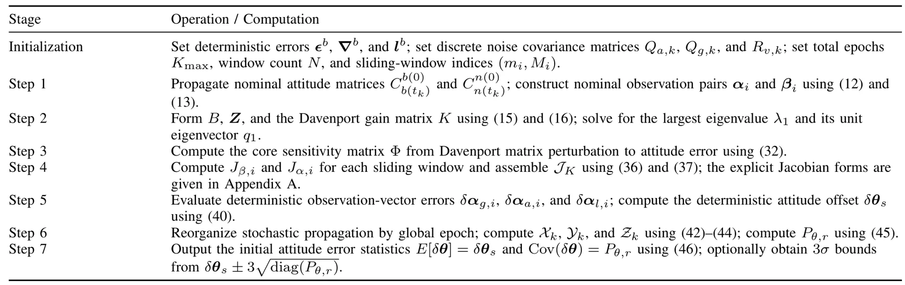
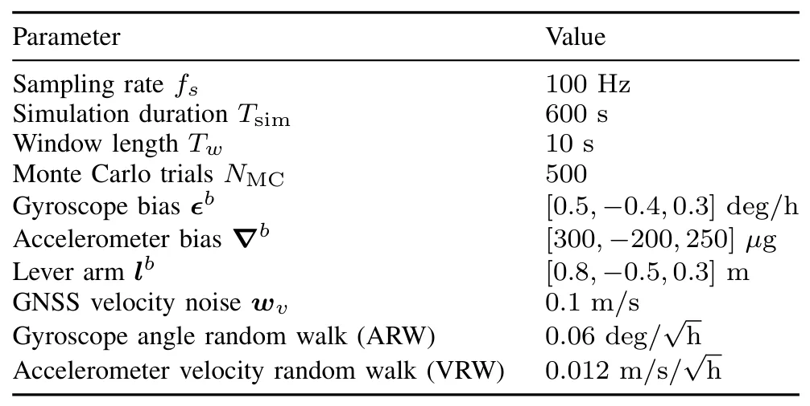
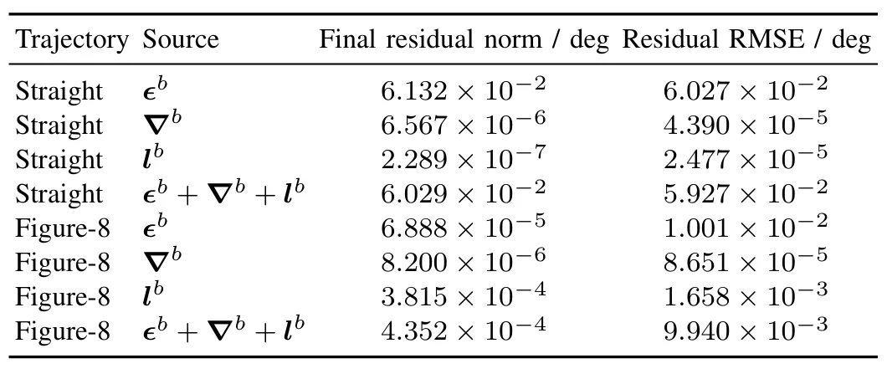

基于速度积分滑窗 OBA 的 GNSS 辅助 SINS 粗对准误差传播分析Optimization-Based Velocity-Integral Sliding-Window Coarse Alignment: Attitude Error Analysis and Validation
虽然不是 SLAM 算法，但对 GNSS/INS 初始化质量评估、组合导航协方差建模和因子图先验设置有价值；需确认模型假设与复杂车辆工况下的鲁棒性。
一句话工作总结
为 GNSS 辅助滑窗速度积分粗对准建立姿态误差解析传播模型，预测陀螺/加计/GNSS 速度/杆臂不确定性导致的姿态偏置与协方差。
摘要
优化式对准（OBA）常把 SINS 粗对准转化为常初始姿态估计问题，是 GNSS 辅助运动中对准的重要技术。现有研究多关注姿态确定算法或鲁棒观测向量构造，但缺少从原始传感器和辅助速度不确定性到最终姿态误差的解析映射。本文针对固定长度滑窗速度积分 OBA 提出一阶姿态误差传播模型：先建立滑窗观测模型及离散实现，将陀螺误差、加计误差、GNSS 速度噪声和杆臂效应传播到未归一化观测向量；再用 Davenport q method 建立观测向量扰动到姿态失准的映射；最后解耦系统误差与随机噪声，分别推导确定性姿态偏置和协方差。Monte Carlo 与车载实测显示模型能捕捉偏置并可靠给出误差 envelope，稳态 RMSE 低于 0.00495 deg。
The optimization-based alignment (OBA) approach transforms the strapdown inertial navigation system (SINS) coarse alignment into a constant initial attitude estimation problem, serving as a prevalent technique for global navigation satellite system (GNSS)-aided in-motion alignment. While existing studies focus on improving accuracy by refining attitude determination algorithms or constructing robust observation vectors, a rigorous analytical mapping to evaluate the resulting attitude errors from raw sensor and aiding-velocity uncertainties has yet to be established for fixed-length sliding-window velocity-integral OBA. To address this issue, this paper proposes a first-order attitude error propagation model for GNSS-aided sliding-window velocity-integral OBA. Specifically, a sliding-window observation model and its discrete implementation are formulated, through which gyroscope errors, accelerometer errors, GNSS velocity noise, and lever-arm effects are analytically propagated to non-normalized observation vectors. Subsequently, Davenport's q method is used to establish the mapping from these vector perturbations to attitude misalignment. By decoupling systematic errors and stochastic noise, the deterministic attitude offsets and the attitude error covariances are respectively derived. Monte Carlo simulations demonstrate that the analytical model accurately captures the deterministic attitude offsets and precisely characterizes the statistical spread, yielding standard-deviation ratios between 0.929 and 1.060 with empirical coverage above 99.4%. Vehicle field tests further confirm its practical applicability, showing that the predicted covariance envelopes reliably bound the actual initial-attitude errors, with steady-state RMSEs strictly below 0.00495 deg. These results validate the proposed model for coarse-alignment attitude error assessment.
中文解读摘录
- 英文题名：SA-LIVO: Efficient LiDAR-Inertial-Visual Odometry with Subspace-Aware Degeneracy Handling
- 作者：Yinong Cao, Xin He, Yuwei Chen, Shijie Liu, Chunlai Li, Jianyu Wang
- 类别/来源：cs.RO；20 pages, 12 figures, 5 tables；采集 score=15；阅读优先级=9.2/10。
- 一句话总结：在同一个 InEKF 优化环内对 LiDAR-visual 信息矩阵做特征分解，按可观测方向选择性融合视觉约束，让视觉主要补偿 LiDAR 退化方向而不干扰已约束方向。
- 为什么值得看：这篇非常贴近实际 LIVO 系统痛点：LiDAR 在走廊、平面、重复结构中退化，视觉又会受光照/纹理影响。SAIF 的“按 eigendirection 线性夹紧软门控”比传统 modality-level gating 更细粒度；摘要还声称视觉 Jacobian 可在迭代外复用，带来 12.3 ms/frame laptop CPU、26.8 ms/frame embedded ARM 且峰值内存降低 3.6–6.3x。后续应重点复核退化方向判定阈值、和 FAST-LIO/LIO-SAM/视觉直接法基线的公平性，以及代码开源进度。
- 标签：LIVO、LiDAR 退化、子空间融合、InEKF
- 链接：abs / PDF
图表/页面预览

{kind=link}

{kind=link}

{kind=link}

{kind=link}
